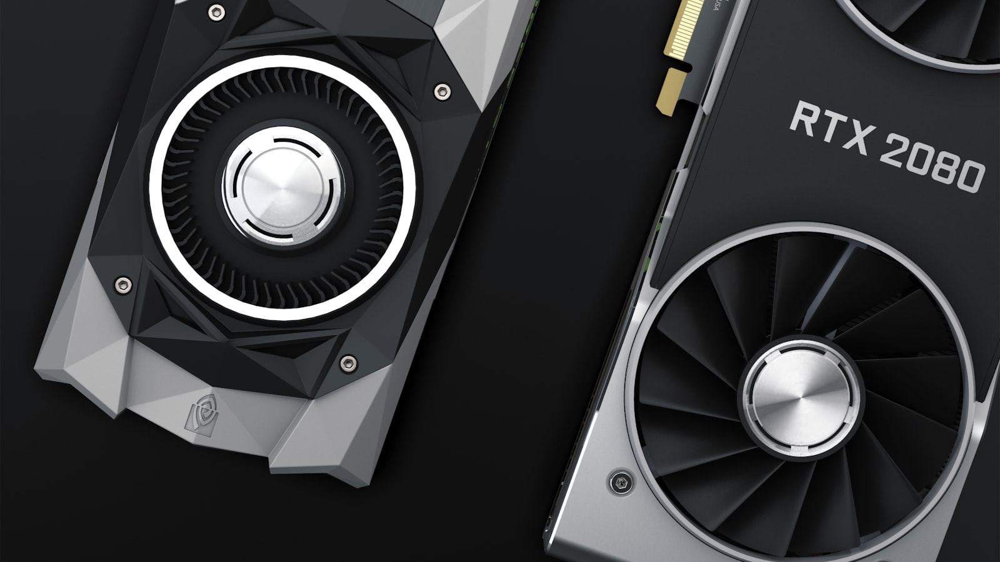
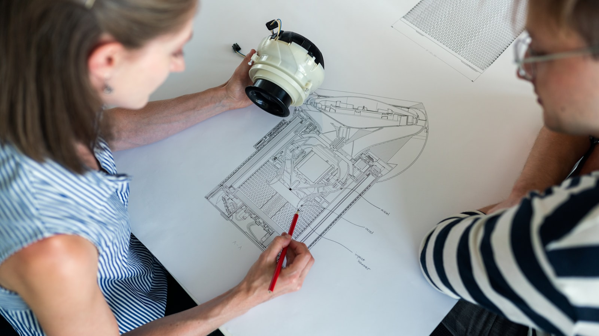
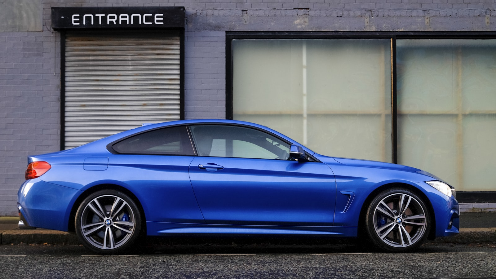
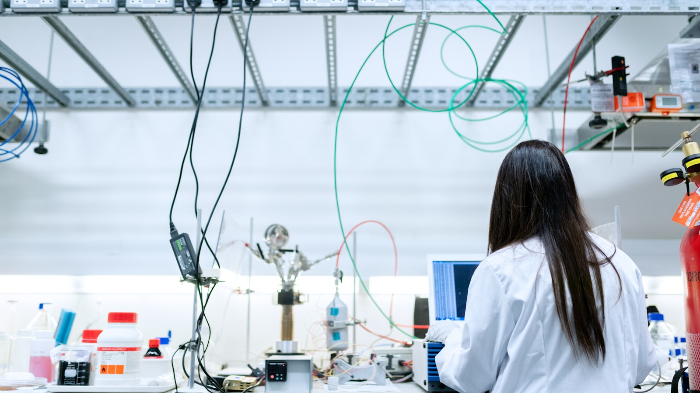
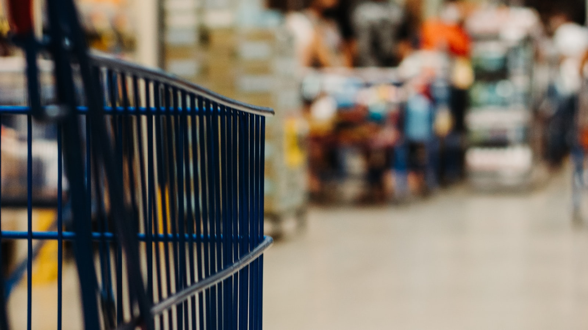

종목 · 메모리
SK하이닉스, PER 기준 삼성전자를 사상 처음 추월
SK하이닉스의 12개월 선행 PER이 삼성전자를 처음으로 추월했다.
삼성전자·SK하이닉스 같은 대형주, 코스닥 중소형주, 그리고 미국 상장 한국 기업까지. 종목 단위의 변화를 추적한다.

SK하이닉스의 12개월 선행 PER이 삼성전자를 처음으로 추월했다.

사내 추정 일평균 손실액 1조 원. 메모리 라인 일부 중단 가능성이 가장 큰 관심사다.
AI 인프라 시대에 NAVER는 성과를 내고 있다. 카카오는 가이던스를 내지 못한다.

두 게임을 동시에 풀어야 한다.

GLP-1과 자가면역 항체 치료제가 다음 카드다.

Q4 2025 쿠팡의 데이터 사고와 거버넌스 질문.

공정거래위원회의 행정 처분과 형사 고발의 다음 단계.

매출은 +8%, 마진은 -228bp. 두 메시지가 같은 분기에.

빠른 배송 인프라 뒤의 가장 무거운 노사 질문.